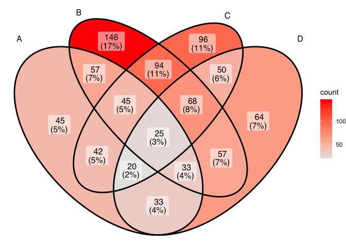
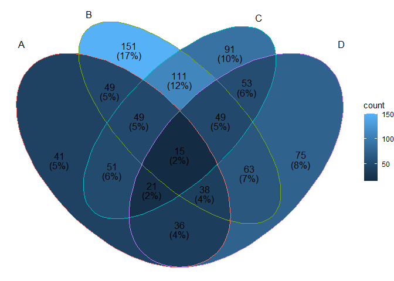
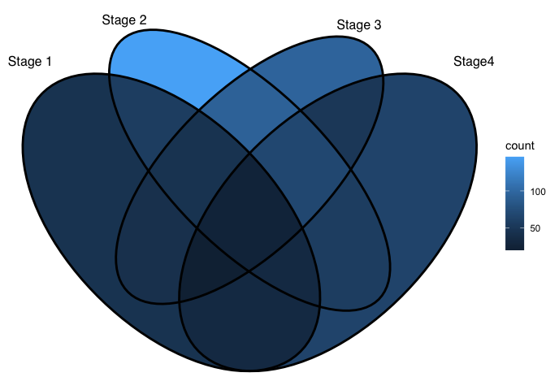
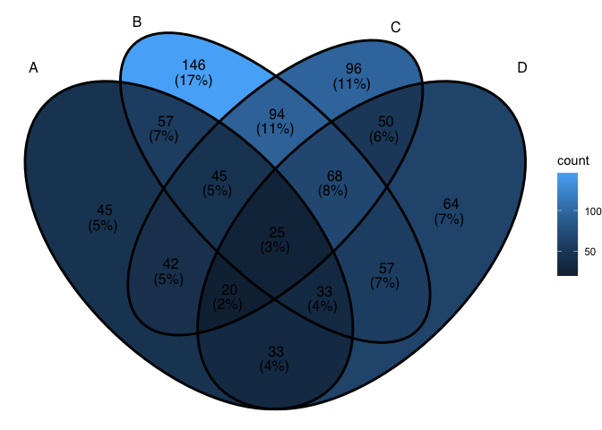
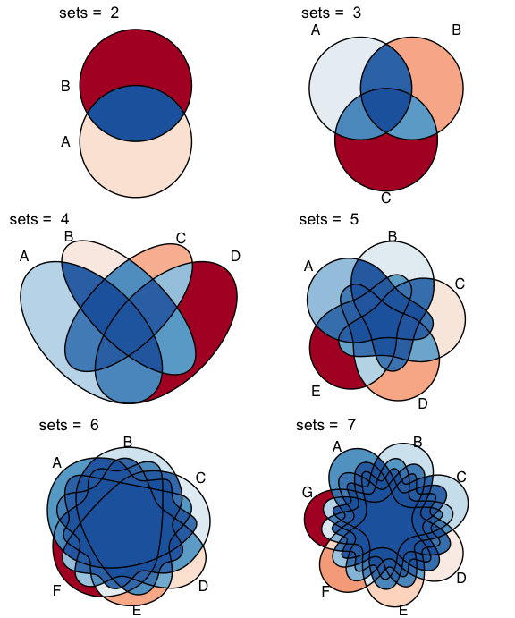
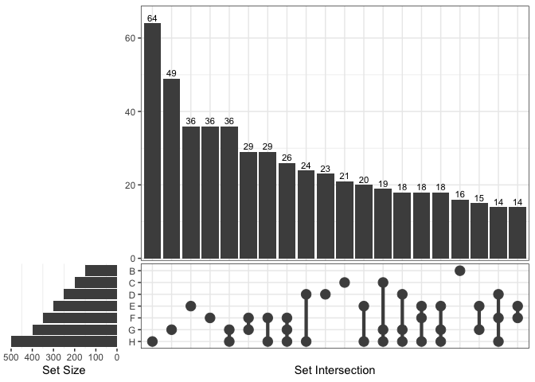
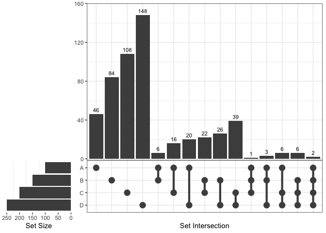
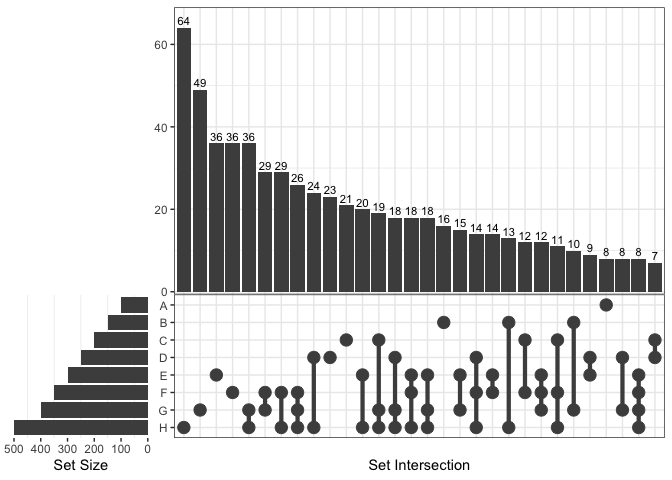

‘ggVennDiagram’ enables fancy Venn plot with 2-7 sets and generates publication quality figure. It also support upset plot with unlimited number of sets from version 1.4.4.
Installation
You can install the released version of ggVennDiagram from CRAN with:
install.packages("ggVennDiagram")And the development version from GitHub with:
# install.packages("devtools")
devtools::install_github("gaospecial/ggVennDiagram")Citation
If you find ggVennDiagram is useful and used it in academic papers, you may cite this package as:
Gao, C.-H., Yu, G., and Cai, P. (2021). ggVennDiagram: An Intuitive, Easy-to-Use, and Highly Customizable R Package to Generate Venn Diagram. Frontiers in Genetics 12, 1598. doi: 10.3389/fgene.2021.706907.
Example
ggVennDiagram maps the fill color of each region to quantity, allowing us to visually observe the differences between different parts.
library(ggVennDiagram)
genes <- paste("gene",1:1000,sep="")
set.seed(20231214)
x <- list(A=sample(genes,300),
B=sample(genes,525),
C=sample(genes,440),
D=sample(genes,350))ggVennDiagram return a ggplot object, the fill/edge colors can be further modified with ggplot functions.
library(ggplot2)
ggVennDiagram(x) + scale_fill_gradient(low="grey90",high = "red")
ggVennDiagram(x, set_color = c("blue","red","green","purple"))
ggVennDiagram support 2-7 dimension Venn plot. The generated figure is generally ready for publish. The main function ggVennDiagram() will check how many items in the first parameter and call corresponding function automatically.
The parameter category.names is set names. And the parameter label can label how many items are included in each parts.
ggVennDiagram(x,category.names = c("Stage 1","Stage 2","Stage 3", "Stage4"))
ggVennDiagram(x,category.names = c("Stage 1","Stage 2","Stage 3", "Stage4"), label = "none")
Set label_alpha = 0 to remove label background.
ggVennDiagram(x, label_alpha=0)
Showing intersection values
Note: you need to install the GitHub version to enable these functions.
We implemented the process_region_data() to get intersection values.
y <- list(
A = sample(letters, 8),
B = sample(letters, 8),
C = sample(letters, 8),
D = sample(letters, 8)
)
process_region_data(Venn(y))
#> # A tibble: 15 × 4
#> id name item count
#> <chr> <chr> <list> <int>
#> 1 1 A <chr [3]> 3
#> 2 2 B <chr [1]> 1
#> 3 3 C <chr [3]> 3
#> 4 4 D <chr [0]> 0
#> 5 1/2 A/B <chr [0]> 0
#> 6 1/3 A/C <chr [1]> 1
#> 7 1/4 A/D <chr [2]> 2
#> 8 2/3 B/C <chr [1]> 1
#> 9 2/4 B/D <chr [3]> 3
#> 10 3/4 C/D <chr [1]> 1
#> 11 1/2/3 A/B/C <chr [1]> 1
#> 12 1/2/4 A/B/D <chr [1]> 1
#> 13 1/3/4 A/C/D <chr [0]> 0
#> 14 2/3/4 B/C/D <chr [1]> 1
#> 15 1/2/3/4 A/B/C/D <chr [0]> 0If only several items were included, intersections may also be viewed interactively by plotly method (if you have two many items, this is useless).
ggVennDiagram(y, show_intersect = TRUE)In web browser or RStudio, you will get:

Customizing your plot
There are three components in a Venn plot: 1) the set labels; 2) the edge of sets; and 3) the filling regions and labels (optional) of each parts. We separately stored these data in a structured VennPlotData object, in which labels, edges and regions are stored as data frames.
In general, ggVennDiagram() plot a Venn in three steps:
- get the coordinates of a applicable shape from internal
shapesdatasets. - calculate sub regions of sets, including both the shape regions and sets members, and return a
VennPlotDataobject that includes all necessary definitions. We implement a number of set operations functions to do this job. - plot using
ggplot2functions.
Please check vignette("fully-customed", package = "ggVennDiagram") for more information.
Venn Diagram for more than four sets
If you have reviewed my codes, you may find it is easy to support Venn Diagram for more than four sets, as soon as you find a ideal parameter to generate more circles or ellipses in the plot. The key point is to let the generated ellipses have exactly one intersection for each combination.
Venn Diagram of up to seven sets
From v1.0, ggVennDiagram can plot up to seven dimension Venn plot. Please note that the shapes for this five sets diagram, as well as those for six and seven sets, are imported from the original package “venn”, authored by Adrian Dușa.
However, Venn Diagram for more than four sets may be meaningless in some conditions, as some parts may be omitted in such ellipses. Therefore, it is only useful in specific conditions. For example, if the set intersection of all group are extremely large, you may use several ellipses to draw a “flower” to show that.
x <- list(A=sample(genes,300),
B=sample(genes,525),
C=sample(genes,440),
D=sample(genes,350),
E=sample(genes,200),
F=sample(genes,150),
G=sample(genes,100))
# two dimension Venn plot
ggVennDiagram(x[1:2],label = "none")
# three dimension Venn plot
ggVennDiagram(x[1:3],label = "none")
# four dimension Venn plot
ggVennDiagram(x[1:4],label = "none")
# five dimension Venn plot
ggVennDiagram(x[1:5],label = "none")
# six dimension Venn plot
ggVennDiagram(x[1:6],label = "none")
# seven dimension Venn plot
ggVennDiagram(x,label = "none")
Native support of upset plot
From version 1.4.4, ggVennDiagram supports unlimited number of sets, as it can draw a plain upset plot automatically when number of sets is more than 7.
# add an extra member in list
x$H = sample(genes,500)
ggVennDiagram(x)
#> Warning in ggVennDiagram(x): Only support 2-7 dimension Venn diagram. Will give
#> a plain upset plot instead.
#> Warning: Removed 1 rows containing missing values (`position_stack()`).
Upset plot can also be used by setting force_upset = TRUE.
ggVennDiagram(x[1:4], force_upset = TRUE, order.set.by = "name", order.intersect.by = "none")
Since upset plot is consisted with upper panel and lower panel, and left panel and right panel, the appearance should be adjusted with different conditions. We provide two parameters, which are relative_height and relative_width to do this.
For example, if we want to give more space to lower panel, just change the relative_height from 3 (the default) to 2.
venn = Venn(x)
plot_upset(venn, nintersects = 30, relative_height = 2, relative_width = 0.3)
Reference
Adrian Dușa (2024) venn: Draw Venn Diagrams, R package version 1.12. https://CRAN.R-project.org/package=venn.